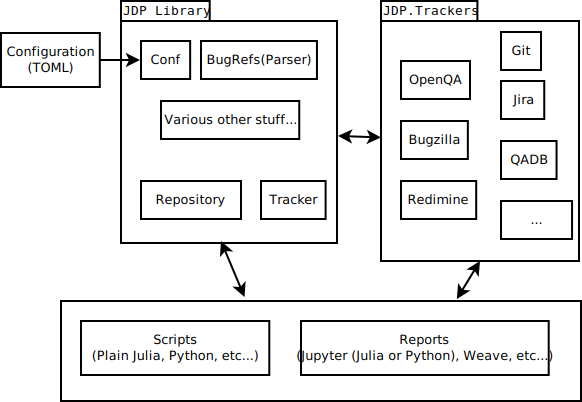

Here we discuss the development of JDP itself for anyone who wishes to contribute or understand what kind of madness this was born from.
You should at the very least read the coding standards and principals before contributing to the core library.
Coding standards and principals
The standards and principals change depending on the stage of the product/component life cycle and what the component is. For now there are three stages to the life cycle. These are listed below along with the principals you should follow.
Components don't necessarily need to start as experimental and progress in a linear fashion. They can be added at any stage. Use the stage specific principals to decide what stage to use.
Components are also differentiated by type: library, script and report. The life cycle stages only apply to the library and to the scripts which automate core functionality (e.g. caching data in the master node).
The reason for having such a complex system of principles is to take advantage of the bar-bell strategy. So that we do not have to compromise between moving quickly to test new ideas and moving slowly to be robust.
Principals and maxims are never perfect. They just provide a common point of reference so that our productivity vectors sum to a value greater than anyone's individual magnitude.
Universal Principals
These apply all the time
- The Silver Rule
- Do not do to others what you would not like to be done to you.
- Be polite, but critical and seek criticism
- We want the correct solution not to feel like we have the correct solution.
- Do the easiest thing to change later
- When in doubt, take the path which is easiest to leave later.
- Show me the code
- Compare your options, make a hypothesis, prove it. (preference for action).
- Small batch sizes
- Make your feeback loop as tight as possible. Risk making your PRs too small, never too big.
- Rule of three
- Sane DRY
- If you need to do something once; write it inline, twice; copy and paste, three times; create an abstraction.
- The solution should be simpler than the problem
- Avoid unnecessary complexity.
Life cycle
Experimental
The proof of concept (POC) stage which allows you to just make it work in the shortest time possible. You are free to take on technical debt at this stage and take shortcuts.
Experimental components can be merged, but will be deleted if they are abandoned. They must align with the below principals otherwise they are just poorly written features and won't be merged.
- Create a falsifiable hypothesis
- Clearly state what you are trying to prove, what failure would look like and what success would be. A component or PR can only be categorised as experimental if it is clearly an experiment.
- Do not over-engineer
- Just do the simplest, easiest thing to prove the feature's viability. Use workarounds to solve problems further down the stack. Do not generalise if a specific solution will meet your current requirements regardless of the consequences.
- Track your technical debt
- You need to keep a list of your technical debt (i.e. a TODO list) which can be used to estimate the cost of turning an experimental component into a stable one.
Stable
Components and code which we won't delete without obsoleting them first.
- Think in the long term
- Assume your code will be run for 10 years and that any mistake will cost many times your own labor and that any improvement will have a huge payoff.
- Document once instead of answering many
- It is better to spend a few hours documenting than many hours answering.
- Upstream first
- Propagate your fixes back to the community and...
- Fix whatever needs to be fixed
- Fixing problems further down the stack can create a long chain-reaction (fractal) of events which eventually benefit us much more than whatever your original task was. Fix root causes, don't write workarounds.
Legacy
Components or APIs which can only be accessed through a versioned interface and only use versioned interfaces. That is, the function names and/or namespaces have the version number in the name. The behaviour of versioned interfaces does not change allowing scripts or reports to use them indefinitely without any maintenance due to changes in the library. Legacy components are deleted if they are not used enough.
Otherwise the principals are the same as the Stable stage.
Library coding standards
This applies to code providing core functionality of the project. This includes some scripts and reports, but we will just refer to them as the library coding standards.
Documentation and commenting
Use documentation strings wherever possible, these are vastly more useful than inline comments. Only use inline comments for annotating very unusual code.
Prefer explicit over implicit
Type annotate all interfaces. Learn Julia's type system use it to lock down your code. Type parameters, abstract types and multiple dispatch allow for so much freedom it is rarely desirable to use implicit types (in function arguments or structs).
Implicit types are often OK for local variables, but adding type annotations can help make code clearer.
Project status
See the documentation for each module. At the time of writing, most of the project needs cleaning up.
Architecture
The following diagrams are only to help you visualise the project. They are not a design specification or very accurate. For more details see the individual component documentation.
Outer

Inner

Motivation
Concrete
We want to spend as little time as possible reading test results and logs while maximising the error (or bug) detection rate. We also want to report all relevant information, and only the relevant information, to any interested parties for a given error using the least amount of time.
The manual process for identifying errors involves looking at information from several sources, identifying relations and reporting those relations to a number of different consumers. There may be several persons forming a tree (in the simple case) or a cyclical directed graph (practically speaking), collecting and processing information then passing it along.
The information is collected from sources such as OpenQA or a manual test run. Points of interest are identified, these are inputted into an issue tracker (commonly Bugzilla) and then the bugs are aggregated into reports. The bugs are then passed back to OpenQA (or whatever) to mark failing test cases or some other anomaly (bug tagging).
We have a number of issues with this:
- Many of the data sources are very slow (e.g. OpenQA, Bugzilla)
- Remote sources are often not available due to the network or other system failure
- The same information is encoded in many different ways
- Log files are often very large and noisy
- Different consumers of error data require different levels of detail
- Different consumers of error data require different views of the data
- What is considered a pass or failure by a given test runner (e.g. OpenQA, Slenkins, LTP upstream test runner) may be incorrect.
- Similar to 7. a skipped test may be an error
- There are many data consumers, each accepting different formats or views of the data.
- Etc.
Less Concrete
Furthermore we are lacking in tools to automate arbitrary workflows given the various data sources and sinks available to us. Therefor we would like to create an environment which allows for easy experimentation/prototyping where the heavy lifting has already been done and any algorithm can be implemented on the data commonly available to us.
Existing solutions
Attempts have been made to solve some of these problems in the OpenQA web UI or with a stand-alone script which queries various sources and produces some output. There are a number of problems with these approaches.
This is not an exhaustive list. These are just the solutions which tend to be automatically chosen.
OpenQA
- It is rigid
- It is slow
- Remote data is not replicated to your local instance
- It is responsible for running the tests (which is a big responsibility)
Theoretically all of these can be solved except for (4). Practically speaking, solving any of them would be a huge challenge. Not least because the iteration time for developing a new feature is very slow and the process is cumbersome.
However some improvements in this area can and should be made to OpenQA. I propose that such improvements can be prototyped in JDP where the iteration time is much smaller and mistakes won't disrupt all testing.
Various scripts
- Little sharing of code (no general library for writing such scripts)
- No local data cache
- No data normalisation between sources
- No common data visualisation
There may be a script somewhere which is evolving to solve some of these issues (maybe for performance testing). I think some of these scripts could be merged with the JDP project so they are not necessarily an alternative solution although doing so may cause some unnecessary friction.
Design Decisions
These decisions should follow from the motivation or requirements of the project.
Not a source of truth
JDP is not a primary data store. It caches data (see next section) from other sources (trackers) and posts data back to other stores. This allows the data cache to be deleted or transformed with no fear of data loss.
Configuration for JDP itself is stored in configuration files which are not associated with the cache.
If yet another tracker (test, bug tracker or something else) is required then it should be created as a separate service.
Distributed Data Cache
The data sources are very slow and unreliable some of the time. So we periodically query the sources and cache the data into a Redis master node. Clients can then be configured to replicate from this master node.
Replicating from the master node is significantly faster than downloading all required data from the original sources.
Each client has (by default, but it is configurable) has its own local Redis instance. This replicates from the master node, but the client can write to it without effecting the master. In the future we could provide some mechanism for clients to send changes back to the master.
Redis could be replaced if necessary or we could insert our own replication layer. The data is stored using BSON.jl to serialise Julia structs, but it can be changed if necessary. The storage layer is fairly well decoupled from the rest of the application.
The reason we are using Redis is because it is simple and easy, yet supports replication. We are probably abusing its replication and this may not scale, so one should not assume that we will be using Redis forever.
Mostly in memory data
The data is mostly brought into memory before being queried. Some filtering may be necessary before fetching from the data store, but most things are done in memory.
The reason for this is to maximise freedom. We make few assumptions about what algorithms or queries the user will want to make on the data. They may wish to use SQL like statements or they may not. They may want to put the data in a graph and run some graph algorithm on it.
The data is stored in the data cache in whatever way we see fit, then it can be fetched and transformed into two or more formats (currently plain structs or DataFrames).
Doing everything in memory places few restrictions on how the data is stored or how it is queried. It is not a performance optimisation except in some quite rare scenarios.
We may need to create indexes for very common queries. For example filtering test results by date or product group. However these must be queries used in almost every script that have a significant positive effect.
Julia
Yes, we are using some crazy language you have never heard of. Some of the reasons are as follows.
Positives
- It has a strong type system which can optionally be inferred. This is good for the core library where we want to type annotate everything for static analysis and self documentation. It is also good for quickly writing scripts/reports where the user doesn't care/know what type gets used. Although personally I like to annotate almost everything.
- It behaves mostly like a scripting language, but is compiled to native code (LLVM). In theory it can be optimised for C like performance, but it has an advanced symbolic macro system and you can dynamically build types and objects like in a scripting language.
- It is popular with people doing a lot data analysis, like scientists and such.
- It has a nice system for displaying any object graphically in different backends (e.g. as html, vectors, markdown, plain text, ...).
- I managed to get the basics working very quickly.
- It is not completely alien compared to more popular languages. The learning curve is fairly low for making basic changes. It then increased rapidly once the type system is involved which I actually consider a good thing.
- It interfaces well with C and Python[1]
- It makes me happy.
Untested by us, but it is probably mostly true. If it interfaces with C well it probably also works well with any other language which exports sane symbols.
Negatives
On the downside:
- In practice it is not very quick because many libraries are not optimised.
- It looks alien to C/Perl programmers.
- Even common libraries are often immature and contain bugs
- Python/R/Scalar/X exists and people will ask why aren't you using Python/R/Scalar/X.
- The startup time is quite bad because it often decides to recompile stuff on the fly.
- It's just generally not very mature and stuff breaks with major language releases.
- There are no packages for individual libraries.
- Has some weird syntax and behavior which I think will need to be changed at some point.
Please note that I have repeatedly looked round at alternatives to Julia. Something really bad would have to happen at this point for us to change it. Also in the future if people wish to write scripts/reports in Python they should be able to. It is only the library which is limited to Julia and in fact parts could be written in C or another-really-fast-language if really necessary.
Jupyter (formally known as IPython) Notebooks for reports/scripts
For some of the reports/scripts we use Jupyter which is a graphical REPL of sorts. It allows you to write blocks of code which produce some object which can be graphically represented below the code block (cell). It also allows blocks of Markdown to be rendered inline. The code blocks can all be run in sequence or individually.
To experienced C hackers it looks like baby's first coding IDE, but it is very useful for creating report prototypes because you can render HTML/Markdown/SVG inline and quickly rerun a particular bit of code (like a REPL).
Also JDP is not necessarily just aimed at developers as end users. Jupyter provides something resembling a GUI, but with all the wires hanging out. There is also the possibility of hosting the notebooks remotely for people who can't/won't install JDP locally.
Jupyter notebooks can be replaced or supplemented with something else if it better suites a given use case. Also scripts and reports do not need to be written as Jupyter notebooks; it is down to the author's discretion.